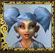

Les Terres de Kirin Tor
Loo
Points : 1

Joué par :
[ Information masquée ]
Age : inconnu
Lieu de naisance : Gnomeregan
Sexe : Femme
Race : Gnome
Faction : Alliance
Formation : Voleur
Niveau : 60
Guilde : Ménestrels (les)
Artisanat 1 : Alchimiste
Artisanat 2 : Herboriste
Envoyer un MP
Informations hrp : Bien que jouant la classe "voleur", Loo peut être considérée comme "espionne". (LOO = 007 permuté)
Description : Rescapée de Gnomeregan.
A infiltrée le Cercle Secret d'Hulfdan Blackbeard afin d'y retrouver un trésor perdu. Et recherchée par le Cercle depuis.
D'un caractère candide, elle n'en est pas mieux téméraire. Toujours prête à aider les autres, surtout si cela peut lui rapporter "des sous".
Elle est une fanatique des "belles lames".